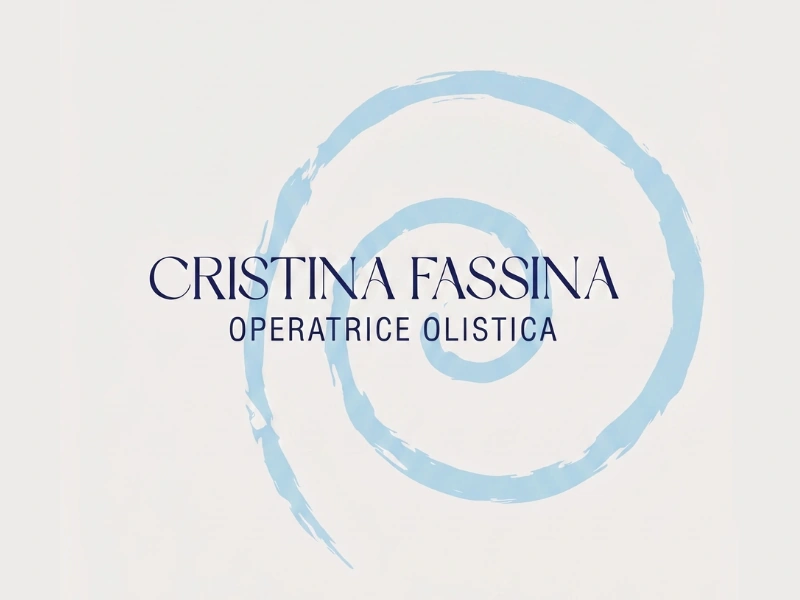
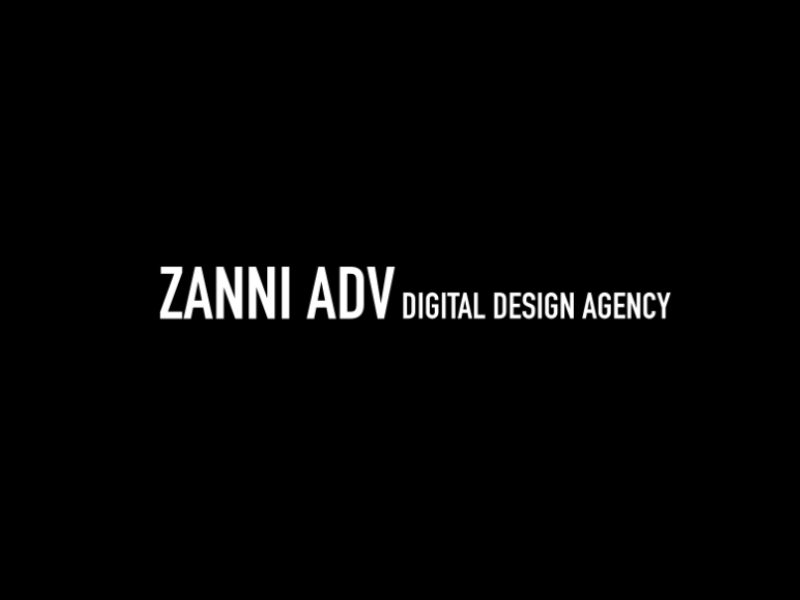
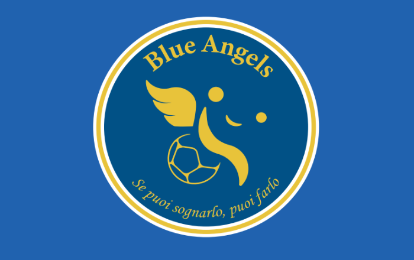
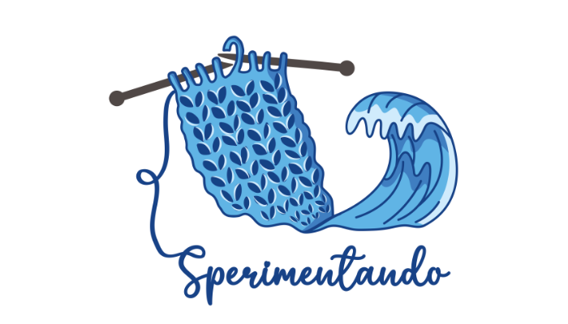
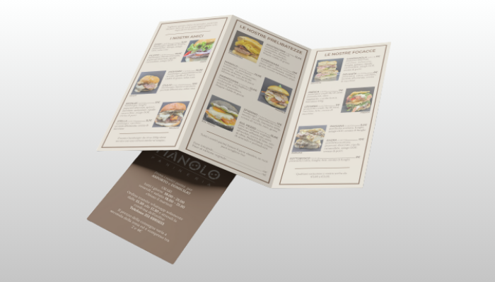
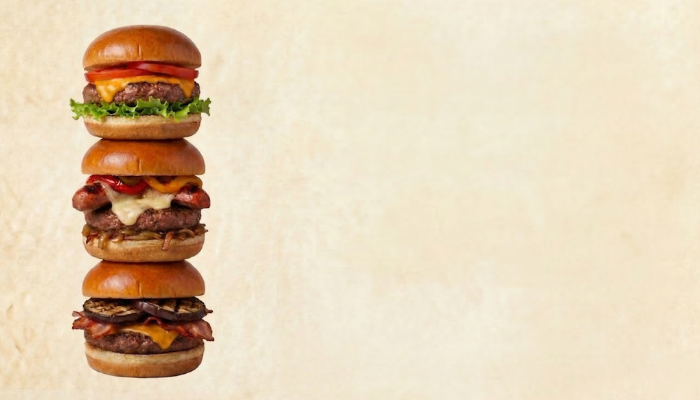
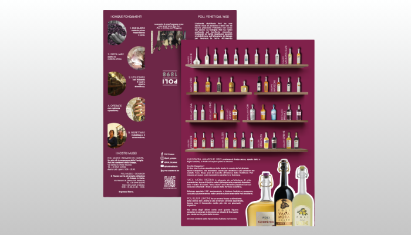
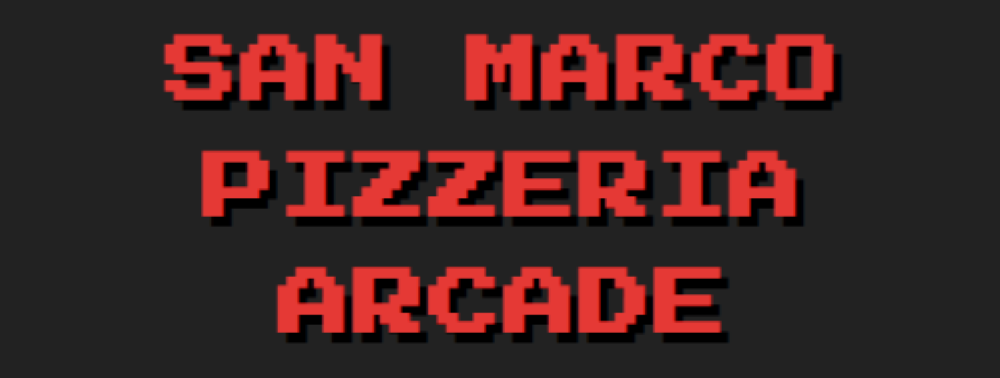

Bonjour ! Je suis Anna Bettini…
Graphiste orientée digital, spécialisée en identité visuelle et en social media marketing. Je transforme des concepts en projets de communication stratégiques, en associant la créativité traditionnelle à l’innovation des outils d’IA : Gemini, ChatGPT, Claude et bien d’autres.
Mon regard s’est formé au Liceo Artistico G. Valle (lycée d’art), filière graphisme (2019–25), où j’ai appris à structurer mes idées. Aujourd’hui, cette base rencontre la stratégie sur les réseaux sociaux, entre identité de marque, mise en page et calendriers éditoriaux.
- Illustrator
- InDesign
- Photoshop
- Premiere Pro
- Gemini
- ChatGPT
- Claude
- et d’autres IA
- Mailchimp
Liceo Artistico G. Valle (lycée d’art), filière graphisme · 2019–25
Cours de Social Media Manager, 224 heures · E-Cons · 2025–26 : analyse de marché, stratégie marketing, protection juridique et intelligence artificielle
Et après ? Je continue à me former chaque jour, sur plusieurs fronts : cours en ligne (dont Learnn), étude en autonomie et expérimentation avec des outils d’IA comme Gemini, ChatGPT, Claude et bien d’autres, pour apporter des solutions actuelles à mes projets.

Cristina FassinaSocial media
Zanni ADVAgence
Blue Angels ASDLogo
Sperimentando 2025Logo
Manolo PanineriaPrint
Fuori Menù HamburgerMenu
Poli DistillerieBrochure
San Marco Pizzeria ArcadeQuiz interactif2 concours remportés
Logo pour Blue Angels ASD (2023) et pour Sperimentando (2025).
4 clients en agence
Camicetta Snob, Majo Accessories, Story Loris et Ravazzolo : chaque semaine, stories comprises.
- 2026 — aujourd’huiSocial Media ManagerZanni ADV
Stratégies et calendriers éditoriaux pour plusieurs clients.
- 2025Graphisme prépresseOlallà
Fichiers prêts pour l’impression : marges, couleurs, production.
- 2021 — aujourd’huiGraphismeProjets indépendants
Identités visuelles et supports promotionnels.
- 2024CiceronaFAI – Fondo Ambiente Italiano
Guide pour les visiteurs lors d’événements culturels.
Sur le set
Moments en coulisses : les essais de pose pendant un shooting en extérieur, une vidéo tournée dans un bosquet de bambous, le shooting de Story Loris avec l’ourson et moi avec les chaussettes, dans la sélection des photos.
- À
- Anna Bettini · bettinianna006@gmail.com
- Objet
- Bonjour Anna, j’ai une idée… parlons-en !
- Téléphone
- +39 331 933 3084
- Basée à
- Padova
- anna-bettini ↗ (s’ouvre dans un nouvel onglet)